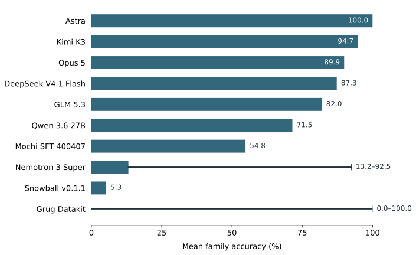
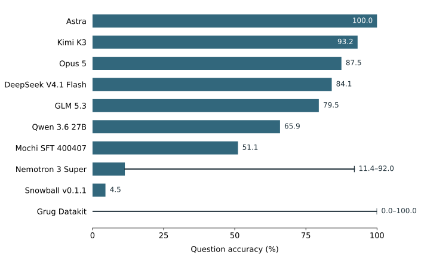
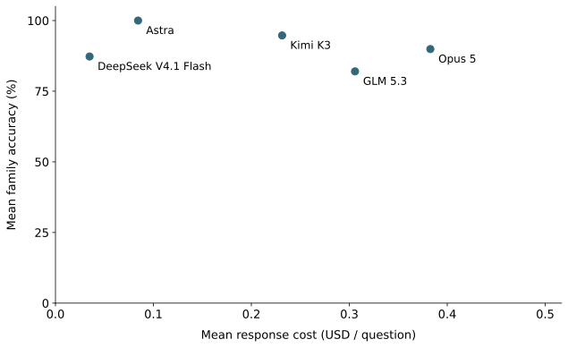
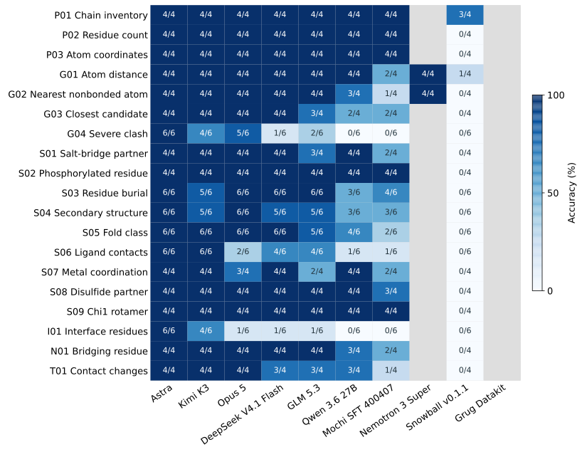

Standardized comparison
88 identical coordinate questions across 19 families. Temperature 0.7, a 262,144-token total budget, top-p 1.0 and disabled top-k filtering for adjustable models.
Astra and Opus reject custom sampling controls. Their standardized-* variants
use the same context-budget rule with fixed provider sampling; they are exceptions to temperature and sampler
matching. Matching request controls does not make tokenizers, reasoning computation or numerical inference identical.
Exact prompts and full outputs · Snowball, Mochi and Qwen failure analysis
Current results — incomplete response coverage or required capacity recoveries remain.
Request settings
All variants are fresh runs on the unchanged panel. The context budget includes the entire prompt,
reasoning and answer. For each question, the requested output allowance is
min(endpoint output limit, 262144 − exact prompt tokens). Prompts are never shortened.
For hosted models whose server context is larger, the comparison client enforces this total budget through
the output allowance; it does not reconfigure the provider's model architecture.
No fixed seed is requested for any model. Hosted models request high reasoning effort;
Nemotron's provider mapping and capacity investigation are described below. Local models have
thinking enabled. The controls are model-specific and do not establish equal reasoning compute. Frequency
and presence penalties are zero, and repetition penalty is one for adjustable models. Local min-p filtering
is explicitly disabled. Top-k disabled is encoded as 0 by OpenRouter and -1 by vLLM.
Natural model termination tokens remain model-specific; no benchmark answer string is used to stop generation.
| Variant | Temperature | Top-p | Top-k | Reasoning request | Provider route | Total budget |
|---|---|---|---|---|---|---|
| standardized-astra | Fixed provider sampling | Unsupported | Unsupported | high | openai/flex | 262,144 |
| standardized-opus | Fixed provider sampling | Unsupported | Unsupported | high | anthropic | 262,144 |
| standardized-kimi | 0.7 | 1.0 | Disabled (0) | high | fireworks | 262,144 |
| standardized-deepseek | 0.7 | 1.0 | Disabled (0) | high | fireworks | 262,144 |
| standardized-glm | 0.7 | 1.0 | Disabled (0) | high | fireworks/fast | 262,144 |
| standardized-qwen | 0.7 | 1.0 | Disabled (-1) | Thinking enabled | vLLM | 262,144 |
| standardized-snowball | 0.7 | 1.0 | Disabled (-1) | Thinking enabled | Marin vLLM | 262,144 |
| standardized-mochi | 0.7 | 1.0 | Disabled (-1) | Thinking enabled | Marin vLLM | 262,144 |
| standardized-nemotron | 0.7 | 1.0 | Disabled (0) | high | deepinfra/bf16/priority | 262,144 |
OpenRouter routes require the declared parameters and disable provider fallbacks. Parameter-acceptance
probes succeeded for Kimi, DeepSeek, GLM and Nemotron. Kimi moves from Moonshot to Fireworks to expose top-k;
this provider change is part of its recorded condition. GLM uses Fireworks, because its earlier direct endpoint
is unavailable. Nemotron is nvidia/nemotron-3-super-120b-a12b through DeepInfra's BF16 priority route.
Provider labels do not establish an independently verified weight revision or quantization.
Nemotron remains provisional. Six initial responses stopped at 65,536 tokens despite larger requested allowances. November 17 upstream-debug probes showed that OpenRouter maps its requested high reasoning effort to DeepInfra medium effort. Explicit reasoning budgets and the output-budget alias did not avoid that mapping; a longer explicit-budget probe reproduced the 65K cutoff. The candidate replacement was held before launch. These are unresolved provider limits, not demonstrated native context limits of the weights. They are kept separate from completed model answers.
The Astra and Opus exceptions were chosen before collection after rejected temperature-0.7 probes. Their limitations are documented by OpenAI and Anthropic.
Accuracy
The headline gives each family equal weight; question accuracy gives each question equal weight. Truncated and malformed returned answers are incorrect. Missing responses remain missing and produce lower–upper bounds, not confidence intervals. Native output-limit truncations and full-context exhaustion are counted separately. Provider clamps and interrupted streams remain collection failures. Truncation and format-error counts can overlap.


Download all figures: vector SVG and PDF, plus 300-dpi PNG.
| Variant | Correct / returned / planned | Exact family macro | Exact micro | Output limit | Context exhausted | Format errors |
|---|---|---|---|---|---|---|
| standardized-astra | 85 / 85 / 88 | 96.1–100.0% (incomplete) | 96.6–100.0% | 0 | 0 | 0 |
| standardized-opus | 60 / 66 / 88 | 68.4–94.7% (incomplete) | 68.2–93.2% | 1 | 0 | 1 |
| standardized-kimi | 55 / 61 / 88 | 64.0–94.7% (incomplete) | 62.5–93.2% | 0 | 0 | 0 |
| standardized-glm | 52 / 63 / 88 | 60.5–89.5% (incomplete) | 59.1–87.5% | 0 | 7 | 8 |
| standardized-qwen | 58 / 88 / 88 | 71.5% | 65.9% | 0 | 1 | 3 |
| standardized-snowball | 4 / 88 / 88 | 5.3% | 4.5% | 0 | 2 | 41 |
| standardized-deepseek | 54 / 65 / 88 | 63.2–90.4% (incomplete) | 61.4–87.5% | 0 | 4 | 4 |
| standardized-mochi | 45 / 88 / 88 | 54.8% | 51.1% | 0 | 24 | 27 |
| standardized-nemotron | 10 / 17 / 88 | 13.2–92.5% (incomplete) | 11.4–92.0% | 0 | 0 | 0 |
Accuracy and inference cost

Cost is the mean recorded charge for one selected response per question, including prompt, reasoning and answer tokens. Correct, incorrect and truncated responses all count. Charges reflect the routes, prices and cache discounts in effect during collection. We use the saved OpenRouter usage records; credits are denominated in USD.
This measures response inference cost, not total experiment spending: probes, failed or superseded attempts, credit-purchase fees and hosting overhead are excluded. Qwen, Snowball and Mochi have no measured infrastructure cost in this archive. Missing charges remain unknown; they are never treated as zero. Incomplete runs and models with missing charges are omitted from the plot.
| Model | Costed / returned / planned | Known response charges (USD) | Complete panel (USD) | Mean per question (USD) |
|---|---|---|---|---|
| standardized-astra | 85 / 85 / 88 | 7.3637 | Unavailable | Unavailable |
| standardized-opus | 66 / 66 / 88 | 28.1974 | Unavailable | Unavailable |
| standardized-kimi | 61 / 61 / 88 | 14.2279 | Unavailable | Unavailable |
| standardized-glm | 63 / 63 / 88 | 19.5737 | Unavailable | Unavailable |
| standardized-qwen | 0 / 88 / 88 | Unavailable | Unavailable | Unavailable |
| standardized-snowball | 0 / 88 / 88 | Unavailable | Unavailable | Unavailable |
| standardized-deepseek | 65 / 65 / 88 | 2.2542 | Unavailable | Unavailable |
| standardized-mochi | 0 / 88 / 88 | Unavailable | Unavailable | Unavailable |
| standardized-nemotron | 17 / 17 / 88 | 0.3518 | Unavailable | Unavailable |
Accuracy by question family

| Family | standardized-astra | standardized-opus | standardized-kimi | standardized-glm | standardized-qwen | standardized-snowball | standardized-deepseek | standardized-mochi | standardized-nemotron |
|---|---|---|---|---|---|---|---|---|---|
| P01 · Chain inventory (4 questions) | 4 / 4 | 4 / 4 | 4 / 4 | 4 / 4 | 4 / 4 | 3 / 4 | 4 / 4 | 4 / 4 | 0 / 0 |
| P02 · Residue count (4 questions) | 4 / 4 | 4 / 4 | 4 / 4 | 4 / 4 | 4 / 4 | 0 / 4 | 4 / 4 | 4 / 4 | 0 / 0 |
| P03 · Atom coordinates (4 questions) | 4 / 4 | 4 / 4 | 4 / 4 | 4 / 4 | 4 / 4 | 0 / 4 | 4 / 4 | 4 / 4 | 0 / 0 |
| G01 · Atom distance (4 questions) | 4 / 4 | 4 / 4 | 4 / 4 | 4 / 4 | 4 / 4 | 1 / 4 | 4 / 4 | 2 / 4 | 4 / 4 |
| G02 · Nearest nonbonded atom (4 questions) | 4 / 4 | 4 / 4 | 4 / 4 | 4 / 4 | 3 / 4 | 0 / 4 | 4 / 4 | 1 / 4 | 4 / 4 |
| G03 · Closest candidate (4 questions) | 4 / 4 | 4 / 4 | 4 / 4 | 3 / 4 | 2 / 4 | 0 / 4 | 4 / 4 | 2 / 4 | 1 / 3 |
| G04 · Severe clash (6 questions) | 6 / 6 | 5 / 6 | 4 / 6 | 2 / 6 | 0 / 6 | 0 / 6 | 1 / 6 | 0 / 6 | 0 / 2 |
| S01 · Salt-bridge partner (4 questions) | 4 / 4 | 4 / 4 | 4 / 4 | 3 / 4 | 4 / 4 | 0 / 4 | 4 / 4 | 2 / 4 | 0 / 0 |
| S02 · Phosphorylated residue (4 questions) | 4 / 4 | 4 / 4 | 4 / 4 | 4 / 4 | 4 / 4 | 0 / 4 | 4 / 4 | 4 / 4 | 0 / 0 |
| S03 · Residue burial (6 questions) | 6 / 6 | 6 / 6 | 5 / 6 | 6 / 6 | 3 / 6 | 0 / 6 | 6 / 6 | 4 / 6 | 0 / 0 |
| S04 · Secondary structure (6 questions) | 6 / 6 | 6 / 6 | 5 / 6 | 5 / 6 | 3 / 6 | 0 / 6 | 5 / 6 | 3 / 6 | 0 / 0 |
| S05 · Fold class (6 questions) | 6 / 6 | 6 / 6 | 1 / 1 | 3 / 3 | 4 / 6 | 0 / 6 | 5 / 5 | 2 / 6 | 0 / 0 |
| S06 · Ligand contacts (6 questions) | 6 / 6 | 0 / 0 | 0 / 0 | 1 / 1 | 1 / 6 | 0 / 6 | 0 / 0 | 1 / 6 | 0 / 1 |
| S07 · Metal coordination (4 questions) | 3 / 3 | 0 / 0 | 0 / 0 | 0 / 0 | 4 / 4 | 0 / 4 | 0 / 0 | 2 / 4 | 0 / 1 |
| S08 · Disulfide partner (4 questions) | 2 / 2 | 0 / 0 | 0 / 0 | 0 / 0 | 4 / 4 | 0 / 4 | 0 / 0 | 3 / 4 | 0 / 0 |
| S09 · Chi1 rotamer (4 questions) | 4 / 4 | 0 / 0 | 0 / 0 | 0 / 0 | 4 / 4 | 0 / 4 | 0 / 0 | 4 / 4 | 0 / 0 |
| I01 · Interface residues (6 questions) | 6 / 6 | 1 / 6 | 4 / 6 | 1 / 5 | 0 / 6 | 0 / 6 | 1 / 6 | 0 / 6 | 0 / 1 |
| N01 · Bridging residue (4 questions) | 4 / 4 | 4 / 4 | 4 / 4 | 4 / 4 | 3 / 4 | 0 / 4 | 4 / 4 | 2 / 4 | 1 / 1 |
| T01 · Contact changes (4 questions) | 4 / 4 | 0 / 0 | 0 / 0 | 0 / 0 | 3 / 4 | 0 / 4 | 0 / 0 | 1 / 4 | 0 / 0 |
Model identities and token allowances
Snowball uses the pinned v0.1.1 release at its native 256K context; Qwen also uses its native 256K configuration. Mochi uses Hero SFT step 400407 in BF16, with the same weights, tokenizer route and thinking adapter as the original Mochi run. It is evaluated afresh for this condition. Reasoning delimiters are preserved in the raw response and only the final answer is scored; unfinished reasoning cannot supply an answer.
| Variant | Model identifier | Context budget | Endpoint output ceiling | Weight revision |
|---|---|---|---|---|
| standardized-astra | openai/gpt-6-astra | 262,144 | 128,000 | Provider does not expose immutable weights |
| standardized-opus | anthropic/claude-opus-5 | 262,144 | 128,000 | Provider does not expose immutable weights |
| standardized-kimi | moonshotai/kimi-k3 | 262,144 | 943,718 | Provider does not expose immutable weights |
| standardized-glm | z-ai/glm-5.3 | 262,144 | 943,718 | Provider does not expose immutable weights |
| standardized-qwen | Qwen/Qwen3.6-27B-FP8 | 262,144 | 262,144 | ec4160bf26124fa57e6451d070ee0c459a36d5b7 |
| standardized-snowball | open-athena/Marin-Snowball-67B-A2B-v0.1.1 | 262,144 | 262,144 | 59852d6f07261722bbec1edb6ab148317156b58e |
| standardized-deepseek | deepseek/deepseek-v4.1-flash-1017 | 262,144 | 943,718 | Provider does not expose immutable weights |
| standardized-mochi | hero-sft-step400407 | 262,144 | 262,144 | s3://marin-us-east-02a/marin/exports/mochi-sft/hero-sft-fullab-step393k-v2/step-400407/2af3f828aa-cpu-a1 |
| standardized-nemotron | nvidia/nemotron-3-super-120b-a12b | 262,144 | 235,929 | Provider does not expose immutable weights |
Actual per-question allowances
| Variant | Smallest requested allowance | Largest requested allowance | Longest returned completion |
|---|---|---|---|
| standardized-astra | 128,000 | 128,000 | 36,825 |
| standardized-opus | 128,000 | 128,000 | 128,000 |
| standardized-kimi | 197,475 | 248,177 | 96,035 |
| standardized-glm | 194,163 | 247,749 | 238,635 |
| standardized-qwen | 179,279 | 245,931 | 233,298 |
| standardized-snowball | 199,120 | 249,473 | 226,335 |
| standardized-deepseek | 204,891 | 250,003 | 235,022 |
| standardized-mochi | 199,120 | 249,473 | 240,916 |
| standardized-nemotron | 177,428 | 235,929 | 59,245 |
Evaluation and provenance
One response per model and question is selected. Completed answers are not retried based on score. Transport failures retain their partial streams and can receive a separately recorded retry with the same parameters and full allowance. The runner never executes tools. Requests explicitly disable tools and the OpenRouter web plugin, and raw responses are audited for tool events. Every published answer is bound to its frozen prompt, request controls, token budget and response hash, then rescored under the unchanged contract.
MECH and the separate F01/F02 sequence-prediction tracks are excluded. These are descriptive scores for a previously exposed 88-question panel; questions sharing source structures are not independent proteins. The question browser publishes exact prompts, oracle answers and full model message fields, including available reasoning and preserved partial text from terminal collection failures. The public evidence also contains per-question token counts, request controls, hashes and collection-failure categories.